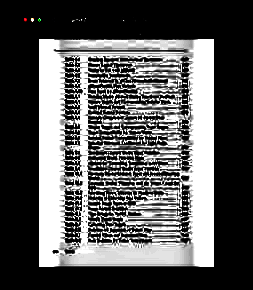
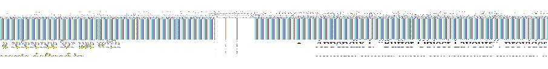
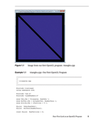
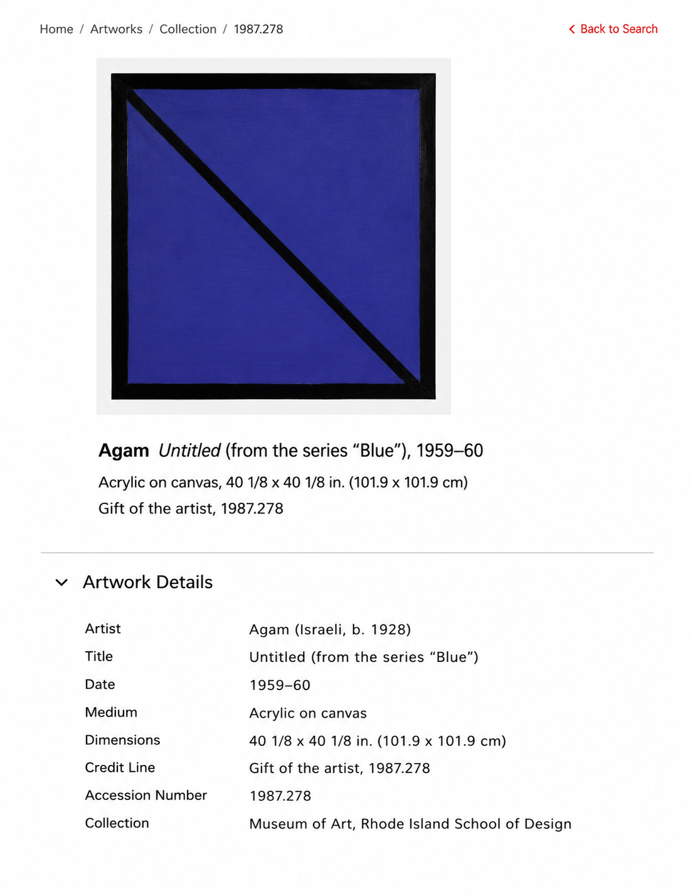

Exercise B Glitch




I wanted to try out different ways I could create glitches that weren't really manipulated by me, kinda accidental. Instead of going in and replicating what a glitch could look like in Photoshop (overlapping, photo effects, etc.), I wanted to just push certain tools as far as I could.
The text I used was the PDF titled OpenGL® Programming Guide, Eighth Edition. I chose this text because I'm learning about shaders and OpenGL in another class, and the text for learning the language is like a glitch to me. It's so confusing and hard to understand that the words aren't even readable.
For the first glitch, I compressed and screenshotted a JPEG a bunch of times and manipulated the dimensions until it looked like a squished blob. For the second one, I just converted the image from JPEG to different file formats, then took the picture into Photoshop and added sharpness. For the third glitch, I used hexed.it and just went in and copied and pasted different lines many times. For the fourth one, I compressed the JPEG, then asked ChatGPT to enhance the text. It made me think about Padgett's creative reading techniques specifically selective attention. The AI fdecied where to focus and was determining what was more or less important to "enhance". For the fifth one, I added the JPEG as a material in Unity and randomly duplicated the image until I got a bunch of layers, then lowered the opacity.